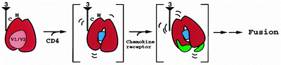

The human immunodeficiency viruses HIV-1 and HIV-2 and the related simian immunodeficiency viruses (SIV) cause the destruction of CD4+ lymphocytes in their respective hosts, resulting in the development of acquired immunodeficiency syndrome (AIDS)1,2. The entry of HIV into host cells is mediated by the viral envelope glycoproteins, which are organized into oligomeric, probably trimeric spikes displayed on the surface of the virion. These envelope complexes are anchored in the viral membrane by the gp41 transmembrane envelope glycoprotein. The surface of the spike is composed primarily of the exterior envelope glycoprotein, gp120, associated by non-covalent interactions with each subunit of the trimeric gp41 glycoprotein complex3,4. Comparison of the gp120 sequences of different primate immunodeficiency viruses identified five variable regions (V1–V5) (ref. 5). The first four variable regions form surface-exposed loops that contain disulphide bonds at their bases6. The conserved gp120 regions form discontinuous structures important for the interaction with the gp41 ectodomain and with the viral receptors on the target cell. Both conserved and variable gp120 regions are extensively glycosylated6. The variability and glycosylation of the gp120 surface probably modulate the immunogenicity and antigenicity of the gp120 glycoprotein, which is the main target for neutralizing antibodies elicited during natural infection7.
Entry of primate immunodeficiency viruses into the host cell involves the binding of the gp120 envelope glycoprotein to the CD4 glycoprotein, which serves as the primary receptor. The gp120 glycoprotein binds to the most amino-terminal of the four immunoglobulin-like domains of CD4. Structures of both the N-terminal two domains8,9 and the entire extracellular portion of CD4 (ref. 10) have been determined, and mutagenesis indicates that the CD4 structure analogous to the second complementarity-determining region (CDR2) of immunoglobulins is critical for gp120 binding11,12. Conserved gp120 residues important for CD4 binding have likewise been identified by mutagenesis3,13,14.
CD4 binding induces conformational changes in the gp120 glycoprotein, some of which involve the exposure and/or formation of a binding site for specific chemokine receptors. These chemokine receptors, mainly CCR5 and CXCR4 for HIV-1, serve as obligate second receptors for virus entry15,16. The gp120 third variable (V3) loop is the principal determinant of chemokine receptor specificity17. However, other more conserved gp120 structures that are exposed upon engagement of CD4 also seem to be involved in chemokine-receptor binding. This CD4-induced exposure is indicated by the enhanced binding of several gp120 antibodies18,19 which, like V3-loop antibodies, efficiently block the binding of gp120–CD4 complexes to the chemokine receptor20. These are called CD4-induced (CD4i) antibodies. CD4 binding may trigger additional conformational changes in the envelope glycoproteins. For example, binding of CD4 to the envelope glycoproteins of some HIV-1 isolates induces the release, or 'shedding', of gp120 from the complex21, although the relevance of this process to HIV entry is uncertain.
HIV and related retroviruses belong to a class of enveloped fusogenic viruses that include corona-, paramyxo- and orthomyxoviruses (e.g. influenza virus), all of which require post-translational cleavage for activation. The transmembrane coat proteins of these viruses (gp41 equivalents) share sequence similarity, particularly in their N-terminal fusion peptides, and they participate directly in membrane fusion. The ectodomain of gp41 can form a coiled coil resembling that of influenza haemagglutinin HA2 (refs 3, 4, 22), supporting the idea that this class of viruses may share some common features of virus entry. In other respects, enveloped viruses tend to be distinctive. They use varying modes of entry (direct membrane penetration for HIV, endocytosis for influenza virus) and even otherwise closely related viruses may use individualized receptors. The exterior coat proteins (gp120 equivalents) are accordingly specialized. Thus, for example, there is no detectable similarity in sequence, nor now in structure, between the receptor-binding portion of HIV and that of murine leukaemia virus23, another retrovirus. Mechanisms for receptor-mediated triggering of fusion may also be virus-specific.
Because of the important role of the gp120 glycoprotein in receptor binding and interactions with neutralizing antibodies, information about the gp120 structure is important for understanding HIV infection and for the design of therapeutic and prophylactic strategies. Here we report the crystal structure at 2.5 Å resolution of a partially deglycosylated HIV-1 gp120 core bound to a two-domain fragment of the CD4 cellular receptor and to the antigen-binding fragment (Fab) of an antibody, 17b, that is directed against a CD4i epitope. The accompanying Letter relates this structure to the antigenic properties of gp120 envelope proteins24.
Structure determination
Because of the extensive glycosylation and conformational heterogeneity associated with the HIV gp120 glycoprotein, we devised a crystallization strategy aimed at radical modification of the protein surface. We made truncations at termini and variable loops in various combinations with gp120 from various strains, extensively deglycosylated these gp120 variants, and produced complexes with various ligands. A theoretical analysis indicated that the probability of crystal formation is greatly increased by such reduction of surface heterogeneity and trials with multiple variants25. After screening almost twenty combinations of gp120 variants and ligands, we obtained crystals25 of a ternary complex composed of a truncated form of gp120, the N-terminal two domains (DID2) of CD4, and aFab from the human neutralizing monoclonal antibody 17b (ref. 18).
The gp120 crystallized was from the HXBc2 strain of HIV-1. It has deletions of 52 and 19 residues from the N and C termini, respectively; Gly-Ala-Gly tripeptide substitutions for 67 V1/V2 loop residues and 32 V3 loop residues; and the removal of all sugar groups beyond the linkages between the two core N-acetylglucosamine residues. This deglycosylated core gp120 is stripped of over 90% of the carbohydrate but it retains over 80% of the non-variable-loop protein. Its capacity to interact with CD4 and relevant antibodies is preserved at or near wild-type levels26. The crystals are of space group P2221 (a = 71.6, b = 88.1, c = 196.7 Å), with one ternary complex and 58% solvent in the crystallographic asymmetric unit.
The ternary structure was solved by a combination of molecular replacement, isomorphous replacement and density modification techniques. It has been refined to an R-value of 21.0% (5–2.5 Å data >2, R-free = 30.3%). The final model, composed of 7,877 atoms, comprises residues 90–396 and 410–492 of gp120 (except loop substitutions), residues 1–181 of CD4, and residues 1–213 of the light chain and 1–229 of the heavy chain of the 17b monoclonal antibody. In addition, 11 N-acetylglucosamine and 4 fucose residues, and 602 water molecules have been placed. The overall structure of the complex of gp120 with D1D2 of CD4 and Fab 17b is as shown in Fig. 1.
Figure 1: Overall structure.
The ribbon diagram shows gp120 in red, the N-terminal two domains of CD4 in yellow, and the Fab 17b in light blue (light chain) and purple (heavy chain). The side chain of Phe 43 on CD4 is shown. The prominent CDR3 loop of the 17b heavy chain is evident in this orientation. Although the complete N and C termini of gp120 are missing, the positions of the gp120 termini are consistent with the proposal that gp41, and hence the viral membrane, is located towards the top of the diagram. This would position the target membrane at the diagram base. The vertical dimension of gp120 in this orientation is roughly 50 Å. Perpendicular views of gp120 are shown in Figs 2 and 4. Drawn with RIBBONS49.
High resolution image and legend (88K)Structure of gp120
The deglycosylated core of gp120 as dissected from the ternary complex approximates a prolate ellipsoid with dimensions of 50  50 25 Å, although its overall profile is more heart-shaped than circular. Its backbone structure is shown in Fig. 2a, c in an orientation precisely perpendicular to that in Fig. 1 (Fig. 4e shows a mutually perpendicular view). This core gp120 comprises 25
50 25 Å, although its overall profile is more heart-shaped than circular. Its backbone structure is shown in Fig. 2a, c in an orientation precisely perpendicular to that in Fig. 1 (Fig. 4e shows a mutually perpendicular view). This core gp120 comprises 25  -strands, 5
-strands, 5  -helices and 10 defined loop segments, all organized with the topology shown in Fig. 2b. Specific spans of structural elements are given in Fig. 2d. The structure confirms the chemically determined disulphide-bridge assignments6 (Fig. 2c). The polypeptide chain of gp120 is folded into two major domains, plus certain excursions that emanate from this body. The inner domain (inner with respect to the N and C termini) features a two-helix, two-strand bundle with a small five-stranded -sandwich at its termini-proximal end and a projection at the distal end from which the V1/V2 stem emanates. The outer domain is a stacked double barrel that lies alongside the inner domain so that the outer barrel and inner bundle axes are approximately parallel.
-helices and 10 defined loop segments, all organized with the topology shown in Fig. 2b. Specific spans of structural elements are given in Fig. 2d. The structure confirms the chemically determined disulphide-bridge assignments6 (Fig. 2c). The polypeptide chain of gp120 is folded into two major domains, plus certain excursions that emanate from this body. The inner domain (inner with respect to the N and C termini) features a two-helix, two-strand bundle with a small five-stranded -sandwich at its termini-proximal end and a projection at the distal end from which the V1/V2 stem emanates. The outer domain is a stacked double barrel that lies alongside the inner domain so that the outer barrel and inner bundle axes are approximately parallel.
Figure 2: Structure of core gp120.
In a–c, the orientation of gp120 is related to Fig. 1 by a 90° rotation about a vertical axis. Thus the viral membrane would be oriented above, the target membrane below, and the C-terminal tail of CD4 would be coming out of the page. In this view, we describe the left portion of core gp120 as the inner domain, the right portion as the outer domain, and the 4-stranded sheet at the bottom left of gp120 as the bridging sheet. The bridging sheet (3, 2, 21, 20) can be seen packing primarily over the inner domain, although some surface residues of the outer domain, such as Phe 382, reach in to form part of its hydrophobic core. a, Ribbon diagram. -Helices are depicted in red and -strands in salmon, except for strand 15 (yellow), which makes an antiparallel -sheet alignment with strand C" of CD4. Connections are shown in grey, except for the disordered V4 loop (dashed line) connecting 18 and 19. Selected parts of the structure are labelled. b, Topology diagram. The diagram is arranged to coincide with the orientation of a, c, Helices are shown as corkscrews and labelled 1–5. -Strands are shown as arrows: black and labelled represent the 25 -strands of core gp120; grey and unlabelled represent the continuation of hydrogen bonding across a sheet; white and labelled represents the C" strand of CD4. Spatial proximity between neighbouring strands implies main-chain hydrogen bonding. Loops are labelled A–F and V1–V5. Labels for loops with high sequence variability are circled. Assignments of secondary structure were made with the Kabsch and Sander algorithm, except for 4 and 8, which are both interrupted mid-strand by side-chain–backbone hydrogen bonds, 9, 15 and 25a, all of which have angles or hydrogen bonds that are slightly non-standard, and 4, which hydrogen bonds as a 310 helix, with the final residue in conformation. c, Stereo plot of an -carbon trace. Every 10th C is marked with a filled circle, and every 20th residue is labelled. Disulphide connections are depicted as ball and stick. The ordered residues 90–396 and 410–492 are shown. d, Structure-based sequence alignment. The sequences are shown of HIV-1 B (core gp120 from clade B, strain HXBc2 used in these studies), C (HIV-1 clade C, strain UG268A2), O (HIV-1 clade O, strain ANT70), HIV-2 (strain ROD), and SIV (African green monkey isolate, clone GRI-1). The secondary-structure assignments are shown as arrows and cylinders, with a cross denoting residues that are disordered in the present structure. The 'gars' sequence at the N terminus and the 'gag' sequence in the V1/V2 and V3 loops are consequences of the gp120 truncation. Solvent accessibility is indicated for each residue by an open circle if the fractional solvent accessibility is greater than 0.4, a half-filled circle if it is 0.1 to 0.4, and a filled circle if it is less than 0.1. Sequence variability among primate immunodeficiency viruses is indicated below the solvent accessibility by the number of horizontal hash marks: 1, residues conserved among all primate immunodeficiency viruses; 2, conserved among all HIV-1 isolates; 3, moderate variation among HIV-1 isolates; and 4, significant variability among HIV-1 isolates. In assessing conservation, all single atom changes were permitted as well as larger substitutions if the character of the side chain was conserved (for example, K to R or F to L). N-linked glycosylation is indicated by 'm' for the high-mannose additions and 'c' for the complex additions in mammalian cells6. Residues of gp120 in direct contact with CD4 are indicated by an asterisk. Direct contact is a more restrictive criterion of interaction than the often-used loss of solvent-accessible surface; residues of gp120 that have lost solvent-accessible surface but are not in direct contact include 123, 124, 126, 257, 278, 282, 364, 471, 475, 476 and 477. Panels a and b were drawn with MOLSCRIPT (P. J. Kraulis).
Figure 4: Neutralizing antibody 17b–gp120 interface.
a, C worm diagram of Fab 17b and gp120. The Fab 17b (blue) is shown binding to gp120, which has been coloured red (inner domain), pink (bridging sheet and V1/V2 stem), orange (outer domain) and green (V3 base). The orientation is the same as in Fig. 2a, c. b, Contact surface and V3 loop. The surface of gp120 is in red, with any surface within 3.5 Å of Fab 17b (surface-to-atom centre) coloured blue and the surface of the V3 base coloured green. The orientation is the same as in a. c, Contact surface and V3 loop. The same as b but rotated by 90° around a horizontal axis better to depict the 17b epitope. d, The electrostatic potential is shown at the solvent-accessible surface, which is coloured according to the local electrostatic potential, ranging from dark blue (most positive) to red (negative). The electrostatic colouring is on the same scale as that in Fig. 3c. The surface that corresponds to the 17b epitope is the most electropositive region of the molecule. The V3 loop is truncated here, but sequence analysis shows it to be positively charged overall. e, C-worm diagram of gp120. The gp120 is coloured according to the scheme in a. The orientation is the same as in c and d: that is, 90° from a. Figure was made with GRASP50.
The proximal barrel of the outer-domain stack is composed from a six-stranded, mixed-directional -sheet that is twisted to embrace helix 2 as a seventh barrel stave. The distal barrel of the stack is a seven-stranded antiparallel -barrel. The two barrels share one contiguous hydrophobic core, and the staves also continue from one barrel to the next except at the domain interface. This interruption is centred at a side between barrels where the chain enters the outer domain, with loop B insinuated as a tongue between strands 16 and 23. The extended segment just preceding B is like an eighth stave of the distal barrel, but is slightly out of reach for hydrogen bonding with its 16 and 19 neighbours. The chain returns to complete the inner domain after 24.
The proximal end of the outer domain includes variable loops V4 and V5 and loops D and E, which are variable in sequence as well. Loop C is also at this end, close in space to loop A of the inner domain, although by topology it is at the other end of this domain. The distal end does include the base of the excised variable loop V3 and also an excursion via loop F into a -hairpin, 20–21, which in turn hydrogen-bonds with the V1/V2 stem emanating from the inner domain. This completes an antiparallel, four-stranded 'bridging sheet' which stands as a peculiar minidomain in contact with, but distinct from, the inner and outer domains as well as the excised V1/V2 domain. This bridging sheet also participates in the spatially separated interactions of gp120 with both CD4 and the 17b antibody (Fig. 1, and see below). One further excursion from the body of the outer domain produces strand 15 and helix 3, which are also important in CD4 binding.
Taken as a whole, the structure of gp120 seen here has no precedent. Moreover, our domain-level searches have failed to reveal similarity of the inner domain to any known atomic structures, although the missing terminal segments might conceal relationships. We do, however, find fragmentary similarity for portions of the outer domain with known structures. In particular, part of the protomer of FabA dehydrase27 is like part of the proximal barrel, and dUTP pyrophosphatase28 has elements in common with both barrels of the outer domain. In each case, the superimposable fraction is limited. For FabA, 45 of its 171 C atoms superimpose on five segments, but the rest are topologically unrelated. For dUTPase, 41 of its 152 C atoms appropriately capture 8 of the 15 segments in the outer domain body, but there is no helix corresponding to 2 and the placements of termini are not comparable. Several viruses related to HIV encode dUTPases; however, we have not found sequence evidence to support a role in coat protein evolution.
This structure of core gp120 should be a prototype for the class. As shown in the structure-based alignment of representative sequences (Fig. 2d), there is substantial conservation despite the noted variability among HIV strains. Thus, even an HIV-2 sequence is 35% identical with that of the HXBc2 strain expressed in this crystallized construct, and the identity rises to 77 and 51%, respectively, for the more closely related HIV-1 clade C and clade O representatives. The inner domain is appreciably more conserved than the outer domain, with 86, 72 and 45% identity for the C, O and HIV-2 comparisons, respectively. Variability correlates with the degree of solvent exposure of residues (Fig. 2d), in keeping with the conservation of hydrophobic cores. The seven disulphide bridges retained in core gp120 are absolutely conserved and mostly buried (Fig. 2c). Glycosylation sites are all surface-exposed and are conserved more than average (Fig. 2d). The previously identified HIV variable segments5 are all on loops connecting elements of secondary structure, and loops D and E are also especially variable. Indeed, E is more variable than V5 in light of current sequence data. These loops are also relatively mobile, as reflected in high B-factors or disorder, as in V4. Variable segments in the outer domain, including the exposed face of 2, appear to arise from neutral mutation rather than selective pressure, because they are on non-immunogenic surfaces24, presumably masked by glycosylation.
CD4–gp120 interaction
CD4 is bound into a depression formed at the interface of the outer domain with the inner domain and the bridging sheet of gp120 (Fig.3a). This interaction buries a total of 742 Å2 from CD4 and 802 Å2 from gp120. The surface areas that are actually in contact are considerably smaller (Fig. 3d) because an unusual mismatch in surface topography creates large cavities that are occluded in the interface, as described below. There is, however, a general complementarity in electrostatic potential at the surfaces of contact, although the match is imprecise in this respect as well. The focus of CD4 positivity is displaced from the centre of greatest negativity on gp120 (Fig. 3c). The binding site is devoid of carbohydrate (Fig.3g). The structure of CD4 in this complex differs only locally from that in free D1D2 structures and at only a few places: residues 17–20 at the poorly ordered CDR1-like loop and residues 41, 42, 47, 49 and 60, which are at or near the contact site and have low B factors in the gp120-bound state.
Figure 3: CD4–gp120 interactions.
![Figure 3 : CD4|[ndash]|gp120 interactions. Unfortunately we are unable to provide accessible alternative text for this. If you require assistance to access this image, or to obtain a text description, please contact npg@nature.com](393648ac.tif.0.gif)
a, Ribbon diagram of gp120 (red) binding to CD4 (yellow). Residue Phe 43 of CD4 is also depicted reaching into the heart of gp120. From this orientation, the recessed nature of the gp120 binding pocket is evident. b, Electron density in the Phe 43 cavity. The 2Fo - Fc electron density map at 2.5 Å, 1.1 contour, is shown in blue. The gp120 model is depicted in red with the CD4 model in yellow (carbon atoms), blue (nitrogen atoms), and red (oxygen atoms). The orientation is the same as in a. The foreground has been clipped for clarity, removing the overlying 24–5 connection. In the upper middle region lies the central unidentified density. At the bottom, Phe 43 of CD4 reaches up to contact the cavity. Moving clockwise round the cavity, the gp120 residues are Trp 427 (with its indole ring partially clipped by foreground slabbing), Trp 112, Val 255, Thr 257, Glu 370 (packing under the Phe 43 ring), Ile 371 and Asp 368 (partially clipped in the bottom right corner). Hydrophobic residues lining the back of the cavity can be partially seen around the central unidentified density. c, Electrostatic surfaces of CD4 and gp120. The electrostatic potential is shown at the solvent-accessible surface, which is coloured according to the local electrostatic potential, ranging from dark blue (most positive) to deep red (most negative). The slight puffiness of the surface arises from the enlarged solvent-accessible surface relative to the standard molecular surface. On the right, the gp120 surface is shown in an orientation similar to that in Fig. 2a, c, but rotated  20° around a vertical axis to depict the recessed binding pocket more clearly. A thin yellow C worm of CD4 is shown to aid in orientation. On the left, the CD4 surface is shown, rotated relative to the gp120 panel by an exact 180° rotation about the vertical axis shown. A thin red C worm of gp120 is shown. d, CD4–gp120 contact surface. On the right, the gp120 surface is shown in red, with the surface within 3.5 Å of CD4 (surface-to-atom centre distance) in yellow. This effectively creates an imprint of CD4 on the gp120 surface. On the left (180° rotation), the corresponding CD4 surface is shown in yellow, with the gp120 imprint in red. e, CD4–gp120 mutational hot-spots. On the right, the surface of gp120 is shown in red, with the surface highlighted of gp120 residues that have been shown by substitution to affect CD4 binding: cyan, substantial effect — residues 368, 370 and 427; green, moderate effect — residue 457. Also depicted (white) is the surface of the large water-filled cavity at the CD4–gp120 interface. On the left (180° rotation), residues important for gp120 binding are shown on a yellow CD4 surface: cyan, substantial effect — residues 43 and 59; green, moderate effect — residues 29, 35, 44, 46, 47 (ref. 29). f, Side-chain/main-chain contribution to the gp120 surface. The surface of gp120 contributed by main-chain atoms (including C) is green, that contributed by side-chain atoms is white, and that contributed by the C of glycine is brick-red. This orientation is the same as the right panel of c–e and in g, and allows for direct comparison of the CD4–gp120 contact surface. A striking surface concentration of main-chain atoms is seen in the regions corresponding to the CD4 imprint. g, Sequence variability mapped to the gp120 surface. The sequence variability among primate immunodeficiency viruses (Fig. 2d) is mapped onto the gp120 surface. A sliding scale of white (conserved) to brick-red (highly variable) is shown. Carbohydrate residues are also shown: blue, N-acetylglucosamine and fucose residues in the structure; purple, Asn-proximal N-acetylglucosamines modelled at residues 88, 230, 241, 356, 397, 406, 462. Much of the carbohydrate (22 residues) is hidden on the back side of the outer domain. h, Phe 43 cavity. The surface of the Phe 43 cavity is in blue, buried in the heart of gp120. A C worm representation of gp120 (red) shows in green the three stretches that are incorrect by secondary-structure prediction: the B loop, bending around the top of the cavity, parts of 20–21 just below the cavity, and strand 15, slightly right of the cavity. The orientation shown here is the same as for the gp120 surfaces in c–g. i, The CD4-gp120 interface. This schematic representation of the entire interface shows six discrete segments of gp120 (solid black lines) interacting with CD4 (double lines). For orientation, secondary structural elements are labelled, as are representative contact residues from each segment of gp120. Arrows indicate main-chain direction. The side chain of Phe 43 is also shown. The orientation shown is similar to that in a and b. j, gp120 contacts around Phe 43 and Arg 59 of CD4. Residues on gp120 involved in direct contact with Phe 43 or Arg 59 are shown. Electrostatic interactions are depicted as dashed lines. Hydrophobic interactions are found between Phe 43 (CD4) and Trp 427, Glu 370, Gly 473 and Ile 371 (all from gp120) and between Arg 59 (CD4) and Val 430 (gp120). The orientation is similar to that in a, b and i, but has been rotated for clarity. Side chains of Phe 43 and Arg 59, as well as those portions of gp120 sidechains that interact with these crucial CD4 residues, are drawn as bold lines. Panel a was drawn with RIBBONS49, b with program O47, and b–g with GRASP50.
20° around a vertical axis to depict the recessed binding pocket more clearly. A thin yellow C worm of CD4 is shown to aid in orientation. On the left, the CD4 surface is shown, rotated relative to the gp120 panel by an exact 180° rotation about the vertical axis shown. A thin red C worm of gp120 is shown. d, CD4–gp120 contact surface. On the right, the gp120 surface is shown in red, with the surface within 3.5 Å of CD4 (surface-to-atom centre distance) in yellow. This effectively creates an imprint of CD4 on the gp120 surface. On the left (180° rotation), the corresponding CD4 surface is shown in yellow, with the gp120 imprint in red. e, CD4–gp120 mutational hot-spots. On the right, the surface of gp120 is shown in red, with the surface highlighted of gp120 residues that have been shown by substitution to affect CD4 binding: cyan, substantial effect — residues 368, 370 and 427; green, moderate effect — residue 457. Also depicted (white) is the surface of the large water-filled cavity at the CD4–gp120 interface. On the left (180° rotation), residues important for gp120 binding are shown on a yellow CD4 surface: cyan, substantial effect — residues 43 and 59; green, moderate effect — residues 29, 35, 44, 46, 47 (ref. 29). f, Side-chain/main-chain contribution to the gp120 surface. The surface of gp120 contributed by main-chain atoms (including C) is green, that contributed by side-chain atoms is white, and that contributed by the C of glycine is brick-red. This orientation is the same as the right panel of c–e and in g, and allows for direct comparison of the CD4–gp120 contact surface. A striking surface concentration of main-chain atoms is seen in the regions corresponding to the CD4 imprint. g, Sequence variability mapped to the gp120 surface. The sequence variability among primate immunodeficiency viruses (Fig. 2d) is mapped onto the gp120 surface. A sliding scale of white (conserved) to brick-red (highly variable) is shown. Carbohydrate residues are also shown: blue, N-acetylglucosamine and fucose residues in the structure; purple, Asn-proximal N-acetylglucosamines modelled at residues 88, 230, 241, 356, 397, 406, 462. Much of the carbohydrate (22 residues) is hidden on the back side of the outer domain. h, Phe 43 cavity. The surface of the Phe 43 cavity is in blue, buried in the heart of gp120. A C worm representation of gp120 (red) shows in green the three stretches that are incorrect by secondary-structure prediction: the B loop, bending around the top of the cavity, parts of 20–21 just below the cavity, and strand 15, slightly right of the cavity. The orientation shown here is the same as for the gp120 surfaces in c–g. i, The CD4-gp120 interface. This schematic representation of the entire interface shows six discrete segments of gp120 (solid black lines) interacting with CD4 (double lines). For orientation, secondary structural elements are labelled, as are representative contact residues from each segment of gp120. Arrows indicate main-chain direction. The side chain of Phe 43 is also shown. The orientation shown is similar to that in a and b. j, gp120 contacts around Phe 43 and Arg 59 of CD4. Residues on gp120 involved in direct contact with Phe 43 or Arg 59 are shown. Electrostatic interactions are depicted as dashed lines. Hydrophobic interactions are found between Phe 43 (CD4) and Trp 427, Glu 370, Gly 473 and Ile 371 (all from gp120) and between Arg 59 (CD4) and Val 430 (gp120). The orientation is similar to that in a, b and i, but has been rotated for clarity. Side chains of Phe 43 and Arg 59, as well as those portions of gp120 sidechains that interact with these crucial CD4 residues, are drawn as bold lines. Panel a was drawn with RIBBONS49, b with program O47, and b–g with GRASP50.
Direct interatomic contacts are made between 22 CD4 residues and 26 gp120 amino-acid residues. These include 219 van der Waals contacts and 12 hydrogen bonds. Residues in contact are concentrated in the span from 25 to 64 of CD4, but they are distributed over six segments of gp120 (Figs 2d and 3i) : one residue from the V1/V2 stem, loop D, the 15–3 excursion, the 20–21 hairpin, strand 23 and the 24–5 connection. These interactions are compatible with previous analyses of mutational data on both CD4 (refs 11, 12, 29) and gp120 (refs 3, 13, 14). Other groups are also involved, including some at gp120 sites that have not been tested, but residues identified as critical for binding do indeed interact with one another (Fig. 3e). Most important, Phe 43 and Arg 59 of CD4 make multiple contacts centred on residues Asp 368, Glu 370 and Trp 427 of gp120, which are all conserved among primate immunodeficiency viruses. In fact, 63% of all interatomic contacts come from one span (40–48) in C'C" of CD4, and Phe 43 alone accounts for 23% of the total. Similarly, with respect to gp120, the spans of 365–371 and 425–430 contribute 57% of the total. Of the three CD4 lysine residues implicated in binding (residues 29, 35 and 46), only Lys 29 makes a direct ionic hydrogen bond, and although Asp 457 of gp120 is near to these electropositive groups (Fig. 3e, i), it does not make hydrogen bonds.
Several gp120 residues that are covered by CD4 are variable in sequence. This variation is accommodated in part by the large interfacial cavity (Fig. 3e). The gp120 residues in contact with this water-filled cavity are especially variable (Fig. 3g). Moreover, half of the gp120 residues that make contacts with CD4 do so only through main-chain atoms (including C) of gp120, and 60% of CD4 contacts are made by gp120 main-chain atoms (Fig. 3f). Included among these are 5 of the 12 hydrogen bonds in the interface. One such contributing element is an antiparallel -sheet alignment of CD4 strand C" with gp120 strand 15 (Fig. 3a, i).
Atomic details of the interaction are particularly intricate and unusual for the contacts made between gp120 and the mutationally critical CD4 residues Phe 43 and Arg 59 (Fig. 3j). Arg 59 interacts with Asp 368 and Val 430. The carboxylate group of Asp 368 makes double hydrogen-bonds with the guanidinium N atoms of Arg 59, but it also hydrogen-bonds back to the backbone NH group of residue 44 and it appears to be optimally positioned to receive a CH...O hydrogen bond (3.20 Å) from the Phe 43 ring. Phe 43 interacts with residues Glu 370, Ile 371, Asn 425, Met 426, Trp 427 and Gly 473, as well as Asp 368, but only the contacts with Ile 371 have a conventional hydrophobic character. Those to 425–427 and 473, including Trp 427, are only to backbone atoms. A surprisingly large fraction of the Phe 43 contacts (28%) are to polar atoms. The phenyl group is stacked on the carboxylate group of Glu 370, and there are contacts with the carbonyl oxygen atoms of residues 425, 426 and 473 and the NH group of Trp 427. One of these, from the phenyl ring to O 425, is a second candidate CH...O hydrogen bond (3.10Å). Asp 368 and Glu 370 have their carboxylate groups close together (3.54 Å) and they are, of course, buried in the complex. Even for gp120 excised from the complex, their fractional surface accessibilities are only 44 and 14%, respectively. Glu 370 may therefore be protonated. Perhaps the most extraordinary aspect of this site is the large cavity beyond C of Phe 43 (Fig.3b, h, and see below).
of Phe 43 (Fig.3b, h, and see below).
Interfacial cavities
Analysis of the solvent-accessible surface of the ternary complex reveals a number of topologically interior surfaces or cavities. Two of these, both at the gp120–CD4 interface, are unusually large. The larger (279 Å3) is formed at the interface between the slightly concave middle of the CC'C" portion of the CD4 sheet and a groove on gp120, where 23 and 24 are indented relative to 15 and the D loop (Fig. 3e). The second is from a pocket in the gp120 surface that is plugged by Phe 43 from CD4 (152 Å3). This pocket is itself at the interface between the inner and outer domains of gp120 (Fig. 3h). Several other smaller cavities are also wedged at the interface between the two gp120 domains.
The larger cavity is lined mostly by hydrophilic residues, half derived from gp120 and half from CD4. It is not deeply buried; although it is formally a cavity in the crystal structure, minor changes in side-chain orientation could make it solvent-accessible. The observed electron density and predicted hydrogen bonding are consistent with at least eight water molecules in the cavity. Residues from gp120 that actually line the cavity (including Ala 281, Ser 364, Ser 365, Thr 455, Arg 469) show sequence variability, whereas surrounding this variable patch are conserved residues, the substitution of which affect CD4 binding. These include the critical contact residues Asp 368, Glu 370 and Trp 427, which flank one end of the cavity, and Asp 457 at the other end (Fig.3e). Similarly, CD4 residues that line the cavity (such as Gln 40 and Lys 35) can be mutated with only moderate effect on gp120 binding, whereas Arg 59 suffers less loss of solvent-accessible surface upon gp120 binding but is highly sensitive to mutation. This cavity thus serves as a water buffer between gp120 and CD4 (Fig. 3e). The tolerance for variation in the gp120 surface associated with this cavity produces a variational island (Fig. 3g), or 'anti-hotspot', which is centrally located between regions required for CD4 binding, and may help the virus escape from antibodies directed against the CD4-binding site.
The 'Phe 43' cavity (Fig. 3b, h) is very different in character from the larger binding–interface cavity. It is roughly spherical, with a diameter of 8 Å (atom centre to atom centre) across the centre of the cavity. It is positioned just beyond Phe 43 of CD4, at the intersection of the inner domain, the outer domain and the bridging sheet. It is deeply buried, extending into the hydrophobic interior of gp120. The phenyl ring of Phe 43 is the only non-gp120 residue contacting this cavity, forming a lid that covers the bottom of the cavity (Fig. 3b). Other routes of solvent access are possible: past Met 426 under the bridging sheet, or directly through the heart of gp120, at the interface between the inner and outer domains. Ordered water molecules demarking possible paths of solvent access are found along both routes. Nonetheless, in the cavity itself only a few water molecules are seen. The centre of the cavity is dominated by a large piece of spherical density, which is over 4 Å from any protein atom (Fig. 3b). The size, shape and predicted hydrogen bonding of this density is inconsistent with those expected for water, isopropanol, ethylene glycol, or any of the other major crystallization components. We have not identified the source of this density.
Residues that line the Phe 43 cavity (Trp 112, Val 255, Thr 257, Glu 370, Phe 382, Tyr 384, Trp 427 and Met 475; only main chains of 256 and 375–377) are primarily hydrophobic. They are also highly conserved, as much so as the buried gp120 hydrophobic core. Despite a lack of steric hindrance, almost no substitutions to larger residues are found. Given the frequency of gp120 sequence divergence, such conservation strongly implies functional significance. Indeed, although residues that line this cavity provide little direct contact to CD4, they do affect the gp120–CD4 interaction. Thus, mutations at Thr 257 (no contacts) and Trp 427 (only main-chain contacts) can substantially reduce binding. Changes in cavity-lining residues also affect the binding of antibodies directed against the CD4-binding site24. In addition, many of the residues that line the cavity interact with elements of the chemokine-receptor-binding region (see below). It may be that the Phe 43 cavity and the other interdomain cavities form as a consequence of a CD4-induced conformational change (see below).
Despite the unusual cavity-laden interface between gp120 and CD4, we believe that this structure reflects the true character of the interaction. Core and full-length gp120 bind CD4 with similar affinity26, and residues identified as critical by mutational analysis on both components are indeed at the focus of contact in the structure. In any case, the missing gp120 loops and termini could not conceivably have a role in filling these cavities.
Antibody interface
The 17b antibody is a broadly neutralizing human monoclonal isolated from the blood of an HIV-infected individual. It binds to a CD4-induced (CD4i) gp120 epitope that overlaps the chemokine-receptor-binding site20.
Relative to other antibody–antigen pairs the interface between Fab 17b and core gp120 in the ternary complex is small (Fig. 4a–c). The solvent-accessible area excluded upon binding is only 455 Å2 from gp120 and 445 Å2 from 17b, which is largely from the heavy chain (371 Å2). The long (15 residue) complementarity-determining region 3 (CDR3) of the heavy chain dominates, but the heavy-chain CDR2 and the light-chain CDR3 also contribute. Overall, the 17b contact surface is very acidic (3 Asp, 3 Glu, no Arg or Lys), although hydrophobic contacts (notably a cis proline and tryptophan from the light chain) predominate at the centre.
On gp120, the 17b epitope lies across the base of the four-stranded bridging sheet (Fig. 4c, e). All four strands make substantial contact with 17b, suggesting that the integrity of the bridging sheet is necessary for 17b binding. The gp120 surface that contacts 17b consists of a hydrophobic centre surrounded by a highly basic periphery (3 Lys, 1 Arg, and no Asp or Glu) (Fig. 4d). Although this basic gp120 surface complements the acidic 17b surface, only one salt bridge is observed (between Arg 419 of gp120 and Glu 106 of the 17b heavy chain). The rest of the specific contacts occur between hydrophobic and polar residues. Thus, the interaction between 17b and gp120 involves a hydrophobic central region flanked on the periphery by charged regions, predominately acidic on 17b and basic on gp120. There are no direct CD4–17b contacts and none of the gp120 residues contacts both 17b and CD4. Rather, CD4 binds on the opposite face of the bridging sheet, providing specific contacts that seem to stabilize its conformation (Fig. 3i, j) and may explain, in part, the CD4 induction of 17b binding.
The 17b epitope is well conserved among HIV-1 isolates. Of the 18 residues that show a loss in solvent-accessible surface upon contact with 17b, 12 residues (67%) are conserved among all HIV-1 viruses. By contrast, only 19 of the 37 gp120 residues (51%) that show loss of solvent-accessible surface upon CD4 binding are similarly conserved. CD4i epitopes tend to be masked from immune surveillance by the adjacent V2 and V3 loops24. In the complex structure, a large gap is seen between gp120 and the tips of the light-chain CDR1 and CDR2 loops. Pointing directly at this gap is the base of the V3 loop. In intact gp120, the variable loops may need to be bypassed for access to the conserved structures in the bridging sheet. The 17b epitope may be further protected from the immune system by a CD4-induced conformational change (see below).
Chemokine-receptor site
The site of interaction with the chemokine receptor CCR5 overlaps with the 17b epitope30. Both are induced upon CD4 binding and both involve highly conserved residues. Mutational analysis showed that the basic and polar gp120 residues (Lys 121, Arg 419, Lys 421, Gln 422) that contact the 17b heavy chain also are important for CCR5 interaction30. The hydrophobic and acidic surface of the 17b heavy chain may mimic the tyrosine-rich, acidic N-terminal region of CCR5, which is important for gp120 binding and HIV-1 entry31,32. Geometrically, this site is directed at the cellular membrane when gp120 is engaged by CD4. Electrostatic interactions between the basic surface of the bridging sheet and the acidic chemokine receptor (and possibly the acid headgroups in the target membrane) could drive conformational changes related to virus entry.
Oligomer and gp41 interactions
Although monomeric in isolation, gp120 probably exists as a trimeric complex with gp41 on the virion surface. The large electroneutral surface on the inner domain (Fig. 3c) is the probable site of trimer packing based on its lack of glycosylation, its conservation in sequence, the location of CD4- and CCR5-binding sites, and the immune response to this region. These points are elaborated in the accompanying Letter and a model is presented24.
Mutagenic and antibody-binding analyses indicate that the N and C termini of full-length gp120 are the most important regions for interaction with the gp41 glycoprotein33,34. From these analyses, we expect that the gp41-interactive regions will extend away from core gp120 towards the viral membrane, and that the conserved, electroneutral surface is occluded in the oligomer/gp41 interface. A similar arrangement is seen in influenza haemagglutinin, where the extended N and C termini of HA1 interact with the HA2 transmembrane protein35.
Conformational change in core gp120
There is abundant evidence to suggest that CD4 binding induces a conformational change in gp120, but much of it derives from intact gp120 with variable loops in place or from the oligomeric gp120–gp41 complex. The ternary complex structure provides clues to the nature of the conformational changes that occur within core gp120 itself. (Although 17b binding could contribute to the gp120 conformation observed in the crystal, the CD4 contacts are more extensive and multifaceted than those of 17b, indicating that CD4 binding may play the principal part in formation of the observed gp120 structure.)
Were the conformation of gp120 seen here preserved in the absence of CD4, the Phe 43 cavity (now a pocket) would present a perplexing structural dilemma. As discussed above, the cavity-lining residues have few structural restrictions, with ample room for larger substitutions into the cavity, yet these residues are highly conserved and inexplicably hydrophobic if exposed in a pocket. This pocket structure is in turn intimately connected to the bridging sheet, itself peculiar in absence of CD4. Thus, for example, the backbone amide of bridging-sheet residue 425 is hydrogen-bonded to Glu 370, a critical CD4 contact residue (Fig. 3j); Ile 424 makes extensive hydrophobic contacts with Phe 382, which lines the pocket from the outer domain; and Trp 427 packs perpendicular to Trp 112, which lines the pocket from the inner domain (Fig. 3b). N of Trp 427 is delicately poised for hydrogen bonding with the -electrons of the indole ring of Trp 112. Structures such as these would necessarily be sensitive to orientational shifts between the inner and outer domains.
of Trp 427 is delicately poised for hydrogen bonding with the -electrons of the indole ring of Trp 112. Structures such as these would necessarily be sensitive to orientational shifts between the inner and outer domains.
The characteristics of 17b binding to core gp120 provide additional evidence for a CD4-induced conformational change. We do not observe detectable binding of Fab 17b to core gp120 unless CD4 is present, but then the ternary complex is stable in gel filtration. As there are no direct CD4–17b contacts in the structure, the effect of CD4 must be to stabilize the bridging-sheet minidomain to which 17b binds. This result is compatible with the binding properties of 17b and other CD4i antibodies to full-length gp120 (refs 18, 24), but it shows that the conformational change is not limited to an unmasking of the antibody epitope by CD4-induced displacement of the V2 loop, as was initially thought36. The ability of the 17b antibody to bind full-length gp120 in the absence of CD4, albeit with lower affinity, implies that structural elements required for 17b binding can be accessed in the absence of CD4. If we assume that 17b binds in the same way to both full-length and core gp120, as shown by the concordance between the structural contacts (Fig. 4) and epitope-mapping data30, then alternative conformations could be in a kinetically accessible equilibrium in native gp120.
A further indication that core gp120 may differ in the absence of CD4 comes from comparison with theory. When applied to the many known sequence variants of gp120, the evolutionary algorithm of PHD37 gives secondary-structure predictions with estimated reliability above 90% for roughly 45% of the core gp120 sequence. Compared with our structure, it is accurate except at three places where it is markedly wrong (four consecutive residues with reliability index greater than 90%). All of these are at the Phe 43 cavity or in contacts with CD4: loop B, strand 15, and the segment of 20 into the turn to 21 (Fig. 3h). Most significantly, the latter segment (residues 422–429) entering the bridging sheet is predicted to be helical. Indeed, residues 427–428 at the 20–21 turn do have helical character. We also note that CD4 binds efficiently to a gp120 derivative having both 2 and 3 truncated38. As the bridging sheet is probably not stable in the absence of half of its strands, CD4 binding must be able to orientate strands 20 and 21 properly from a very different prior conformation.
The Phe 43 cavity is at the nexus of the CD4 interface, between the inner domain, the outer domain, and the bridging sheet. As such, Phe 43 itself seems to serve as a linchpin without which the structure might collapse. If so, to what state and, in reverse, how does CD4 binding lead to the state seen in this ternary complex? CD4–gp120 binding kinetics are complex39, and microcalorimetry reveals unusually large  H and compensating TS values for soluble CD4 binding to gp120 (M. L. Doyle, personal communication). These exceptional CD4-binding thermodynamics are suggestive of a large conformational change and are similar for both full-length and core gp120, supporting the relevance of our structural observations on core gp120. We imagine that CD4 sees gp120 as an uneven equilibrium of conformational states, makes initial contact by electrostatic interaction (Fig. 3c), stabilizes a nascent complex state, and inserts Phe 43 to weld the cavity into place.
H and compensating TS values for soluble CD4 binding to gp120 (M. L. Doyle, personal communication). These exceptional CD4-binding thermodynamics are suggestive of a large conformational change and are similar for both full-length and core gp120, supporting the relevance of our structural observations on core gp120. We imagine that CD4 sees gp120 as an uneven equilibrium of conformational states, makes initial contact by electrostatic interaction (Fig. 3c), stabilizes a nascent complex state, and inserts Phe 43 to weld the cavity into place.
Viral evasion of immune responses
Analysis of the antigenic structure of gp120 shows that most of the envelope protein surface is hidden from humoral immune responses by glycosylation and oligomeric occlusion24. Most broadly neutralizing antibodies access only two surfaces: one that overlaps the CD4-binding site (shielded by the V1/V2 loop), and another that overlaps the chemokine-receptor-binding site (shielded by the V2 and V3 loops). Conformational changes in core gp120 provide additional mechanisms for evasion from immune surveillance. In the case of the CD4-binding surface, which contains a high proportion of main-chain atoms in the complex (Fig. 3f), the conformation without CD4 bound may expose underlying side-chain variability (Fig. 3g). Escape may also be provided by the recessed nature of the binding pocket (steric occlusion) (Fig. 3a) and by a topographical surface mismatch, which encloses a variational island or 'anti-hotspot' (described above; Fig. 3d). Mechanisms may be similar in the chemokine-receptor region: conformational change may hide the conserved epitope (unformed before CD4 binding); steric occlusion may take place between the CD4 anchored viral spike and the proximal target membrane; and an 'anti-hotspot' equivalent may camouflage chemokine-receptor-binding residues on the V3 loop in surrounding variability. Some of the means used to elude antibody-based defences may also help HIV avoid cellular immunity. Understanding the specific mechanisms of immune evasion may be prerequisite to the design of an effective vaccine.
Mechanistic implications for virus entry
During virus entry, HIV surface proteins fuse the viral membrane with the target cell membrane. gp120 is a crucial participant in the control and initiation of fusion. It functions in positioning: locating a cell capable of productive viral infection, anchoring the virus to the cell surface, and orienting the viral spike next to the target membrane. It also functions in timing: holding gp41 in a metastable conformation and triggering the coordinate release of the three N-terminal fusion peptides of the trimeric gp41. Although this is a complex, multiconformational process, the simplicity of the system, which comprises only two membranes, the viral oligomer and two host receptors, suggests that we may be able to understand the entire mechanism. Crystallography has now provided two snapshots: an intermediate state in which gp120 is bound to CD4, as described here, and a probably final, 'fusion-active' state of the gp41 ectodomain40,41. Although atomic-level structures are lacking for other intermediates, the extensive biochemical data on membrane fusion mediated by HIV-1 envelope glycoproteins extend our understanding from these two states.
The entry process is initiated by binding of HIV-1 to the cellular receptor CD4 (Fig. 5, step 1). Although the extracellular portion of CD4 has some segmental flexibility, this binding roughly orients the viral spike. This orientation can be simulated by an alignment of the D1D2 portion of CD4 in the ternary complex with the previously solved structure of the four-domain, entire extracellular portion of CD4 (ref. 10). Such alignment orients the N and C termini of core gp120 towards the viral membrane, while the 17b epitope/chemokine-receptor-binding site on the gp120 surface faces the target cell membrane. Such an orientation is consistent with the proposed oligomeric structure and gp41-interactive surfaces (see above and ref. 24).
Figure 5: Diagram of gp120 initiation of fusion.
A single monomer of core gp120 is depicted (red) in an orientation similar to that in Fig. 2a, c. The '3' symbolizes the 3-fold axis, from which gp41 interacts with the gp120 N and C termini to generate the functional oligomer. In the initial state of gp120 (on the surface of a virion), the V1/V2 loops (salmon) are shown partially occluding the CD4-binding site. Following CD4 binding (now at a target cell, though above the glycocalyx), a conformational change is depicted as an inner/outer domain shift, with the purple circle denoting the formation of the Phe 43 cavity. This conformational change strains the interactions at the N and C termini of gp120 with the rest of the oligomer, priming the CD4-bound gp120 core. In the next step (directly adjacent to the target membrane), the chemokine receptor binds to the bridging sheet and the V3 loop (in green; bottom left and right, respectively, of gp120), causing an orientational shift of core gp120 relative to the oligomer. This triggers further changes, which ultimately lead to the fusion of the viral and target membranes.
High resolution image and legend (28K)CD4 binding also induces conformational changes in gp120, which result in the creation of a metastable oligomer. Although some of the more flexible gp120 regions and gp41 are missing, the structure of the core gp120–CD4 complex presented here describes this state in atomic detail. CD4 binding results in movement of the V2 loop, which probably partially occludes the V3 loop and CD4i epitopes18,36. It also creates, or at least stabilizes, the bridging sheet on which the latter epitopes are located (described above). In addition, CD4 binding appears to change the V3 region, with enhanced proteolytic susceptibility at the tip of the loop and altered exposure of V3 epitopes19. The uncovered V3 and CD4i epitopes make up the chemokine-receptor binding site. Thus CD4 binding not only orients the gp120 surface implicated in chemokine receptor binding to face the target cell, it also forms and exposes the site itself. These changes may all happen in a single, concerted shift in the relative orientation of the inner and outer domains. This conformational shift may alter the orientation of the N and C termini, at the proximal end of the inner domain, perhaps partially destabilizing the oligomeric gp120/gp41 interface21. Such a shift would also alter the relative placement of the V1/V2 stem (in the CD4i site), which emanates from the inner domain, and the V3 loop, which emanates from the outer domain. Perhaps relevant to this, mutations that permit an adaptation of HIV-1 to CD4-independent entry using CXCR4 involve sequence changes in both the V1/V2 stem and the V3 loop42.
The next step in HIV-1 entry is the interaction of the gp120–CD4 complex with the chemokine receptor (Fig. 5, step 2). Although interactions between CD4 and chemokine receptor may occur, mutagenic analysis (H. Choe and J. Sodroski, unpublished observations) and the known examples of CD4-independent virus entry or chemokine-receptor binding suggest that direct gp120 contacts dominate interaction with the chemokine receptor. As most of the chemokine receptor is encased in the host membrane, binding will move the gp120 bridging sheet close to the target membrane. This movement must require CD4 flexibility because the initial HIV binding at the N-terminal D1 domains probably occurs above the glycocalyx. Reducing flexibility at the D2–D3 juncture or at the D4–membrane juncture of CD4 has been shown to block HIV-1 entry10,43.
Chemokine-receptor binding is believed to trigger additional conformational changes in the HIV-1 envelope glycoprotein trimer that lead to exposure of the gp41 ectodomain. Presumably, a signal is transmitted from the cell-associated distal end of gp120 to elements of the inner domain that are likely to be involved in gp120–gp41 or gp120–gp120 association on the trimer. Although further interdomain shifts may occur in core gp120 after chemokine-receptor binding, the geometrically specific contacts that support the bridging sheet make it unlikely that another shift would occur without destabilizing this important component of the chemokine-receptor-binding site. As the high affinity of the interactions make it likely that both CD4 and chemokine receptor remain bound to gp120 during fusion, we expect additional conformational changes to occur between neighbouring gp120 protomers in the oligomeric complex. Perhaps the chemokine receptor triggers gp41 exposure by prising gp120 protomers away from the trimer axis, thus exerting a torque on the gp120–gp41 interface. It is interesting that several of the substitutions that affect chemokine-receptor binding in the context of monomeric gp120 appear to induce gp120 dissociation in an oligomeric context30.
The structure of the gp120/CD4/17b antibody ternary complex described here reveals many molecular aspects of HIV-1 entry, including the atomic structure of gp120, the explicit interactions with CD4, and the conserved site of binding for the chemokine receptor. Still unknown are details of the apo state of core gp120, the oligomeric structure, the interaction with the chemokine receptor, the conformational changes that trigger reorganization of the gp41 ectodomain, and the structural basis for insertion of the fusion peptide of gp41 into the target membrane. Further understanding will require snapshots of other intermediates. The conformational complexity and intricate domain associations of gp120, like those of reverse transcriptase44, the other large HIV translation product, may reflect genome restrictions at the protein level like those that lead to overlapping reading frames at the transcription level. Multiply protected infection machinery is contained in these condensed intricacies. Its mechanism frustrates host defences; understanding them may inspire medical intervention.
Methods
Protein production, crystallization and data collection. The two-domain CD4 (D1D2, residues 1–182) was produced in Chinese hamster ovarian cells8, the monoclonal antibody 17b in an Epstein–Barr virus immortalized B-cell clone isolated from an HIV-1-infected individual and fused with a murine B-cell fusion partner18, and the core gp120 from Drosophila Schneider 2 lines under the control of an inducible metallothionein promoter20. The various biochemical manipulations (such as deglycosylation for gp120 and papain digestion to produce Fab 17b), protein purification and ternary complex crystallization are described elsewhere25. The best crystals were small needles of cross-section only 30–40  m. These were crosslinked by vapour-diffusion glutaraldehyde treatment (C. J. Lusty, personal communication), equilibrated with cryoprotectant containing stabilizer (10% ethylene glycol with 10.5% monomethyl-PEG5000, 10% isopropanol, 50 mM NaCl, 100 mM citrate/HEPES buffer, pH 6.3), transferred into immiscible oil (Paratone-N; Exxon), suspended in a small ethylene loop at the end of a mounting pin and flash-frozen in a cryostat nitrogen stream at 100 K.
m. These were crosslinked by vapour-diffusion glutaraldehyde treatment (C. J. Lusty, personal communication), equilibrated with cryoprotectant containing stabilizer (10% ethylene glycol with 10.5% monomethyl-PEG5000, 10% isopropanol, 50 mM NaCl, 100 mM citrate/HEPES buffer, pH 6.3), transferred into immiscible oil (Paratone-N; Exxon), suspended in a small ethylene loop at the end of a mounting pin and flash-frozen in a cryostat nitrogen stream at 100 K.
Diffraction data were collected at beamline X4A, Brookhaven National Laboratory, using phosphorimaging plates and a Fuji BAS2000 scanner. To avoid overlap problems from the relatively high mosaicity (1.0°), oscillation data were collected using a rotation axis that was off-set at least 30° from the 197 Å c axis. Although crystals initially diffracted to Bragg spacings of greater than 2 Å, b axis mosaicity and substantial radiation damage, despite cryogenic cooling, reduced the overall limit to 2.5 Å. Data processing and reduction were achieved using DENZO and SCALEPACK45 (Table 1).

Structure determination and refinement. To locate the position of the Fab 17b in the ternary complex crystals, rotational searches with 52 different Fab models were made with the program MERLOT (P. M. Fitzgerald). The Fab fragments were aligned by superposition of their variable domains to allow comparison of rotational solutions. Even though four models showed more than 10% discrimination between the highest and second-highest solutions, no consistent rotational solution was found. Discrimination between correct and incorrect solutions was achieved by using confirmatory searches with the variable portion of the Fab. This was successful with only one model, molecule B of 1hil. Rigid-body refinement of the 1hil solution (XPLOR46), allowing each immunoglobulin domain to move independently, produced a Patterson correlation of 24.9%. To locate the position of the two-domain CD4, each of the top 100 possible rotational solutions with each of three different CD4 models (1cdi, 1cdh, 3cd4), were searched for a distinctive translation solution (AMoRe; J. Navaza). The translation searches used the rigid body refined Fab as a partial structure to help discriminate the correct solution. Two distinctive solutions were found: the 25th rotational solution of 3cd4 gave a translation correlation of 0.171 (versus 0.128 for the second-highest translation solution), and the 61st rotational solution of 1cdh gave 0.149 (versus 0.140). These two solutions were virtually identical. Rigid-body refinement in XPLOR46 gave a Patterson correlation of 7.9% for CD4 alone and 32.4% for Fab and CD4. All molecular replacement and rigid-body refinements used 8–4 Å data.
To provide additional phasing, crystals were soaked in over 20 different heavy-atom solutions and screened for isomorphous replacement using the statistical chi-squared test in SCALEPACK45. Derivatives were identified from two heavy-atom compounds: 10 mM K3IrCl6 (10 h equilibration in a solution containing the heavy atom and cryoprotectant stabilizer; 2.8 Å) and 5 mM K2OsCl6 (24 h soak; 3.5 Å). Isomorphism was found to be highest between these heavy-atom data sets and a native data set collected at pH 7.0 (cryoprotectant stabilizer buffered with 50 mM bis-Tris, pH 7.0). Heavy-atom sites were identified by difference Fourier analysis using the molecular replacement phases, and phasing parameters were refined with MLPHARE (in the CCP4 suite of crystallographic programs). The K3IrCl6 derivative was modelled as nine partially occupied sites: two sites of occupancy 0.158 and 0.142, and seven of less than 0.07. Although relatively isomorphous, poor data quality (Rsym of more than 20% past 3.0 Å) combined with relatively small isomorphous differences (Riso of 12.0%) reduced the quality of phasing. In contrast, the K2OsC16 derivative had an Riso of 15.6%, but was only isomorphous to 5 Å. It was modelled as four sites of occupancy 0.321, 0.207, 0.194 and 0.128, with the highest site at the same position as the second-highest site from K3IrCl6.
The initial combination of model and isomorphous replacement phasing did not produce readily interpretable density for gp120. To monitor phase improvement, we devised an objective assay of density quality that used correlations in a region internal to domain 1 of CD4 between the experimental electron density and the calculated model density (CD4 as positioned by molecular replacement and rigid-body refinement). Refinement of heavy-atom positions improved this correlation, and provided a starting point for phase improvement, primarily using real-space modification techniques (Table 1). These techniques included automatic concatenation of unmodelled density (with the program PRISM; D. Agard), reciprocal-space averaging of the PRISM modelled density and real-space model subtraction (implemented using the XPLOR46 shell language), application of real-space constraints such as solvent flattening, histogram matching and negative-density truncation (with the program DM (in the CCP4 suite of crystallographic programs)), and real-space combined addition of the various experimental density maps (with the program MAPMAN; T. A. Jones). The combined application of these techniques greatly improved electron-density maps (Table 1).
At this point, most of the C backbone could be modelled (with program O47), thereby defining the secondary structure. Computer-aided sequence alignment (slider routine in O) and secondary-structure prediction (PHD37) helped to position the amino-acid sequence, leaving only regions around the N terminus (residues 79–100 and residues 215–245), the V1/V2 loop, and the V4 loop uncertain. Iterative rounds of building with O, simulated annealing and positional refinement with XPLOR46, and addition of ordered solvent clarified the trace.
Structure analysis. Deviations of the CD4 structure in the complex from the free state were measured as described39. Deviations were taken as significant when the root-mean-square (r.m.s.) residue deviation was greater than the overall value and also more than 0.5 Å greater than variation among the free structures. Interatomic contacts were defined as in ref. 48. Structural alignments were made by visual comparison of the SCOP database, and automatic searches were made with PrISM (A.-S. Yang and B. Honig).